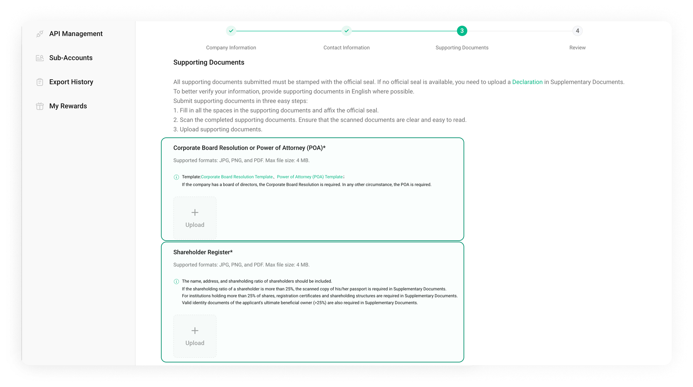
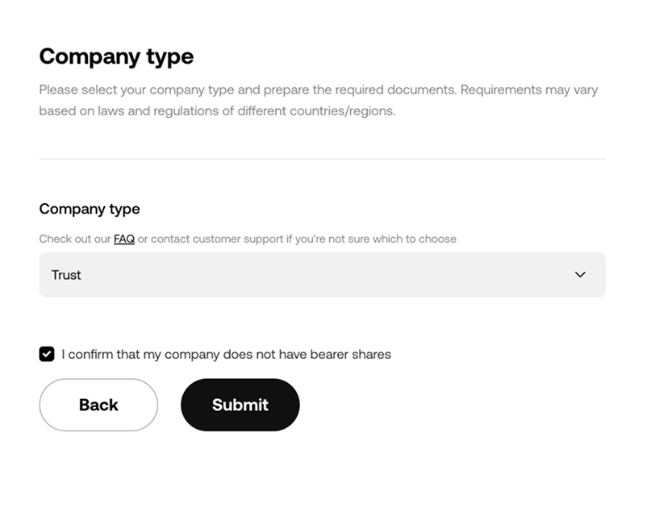
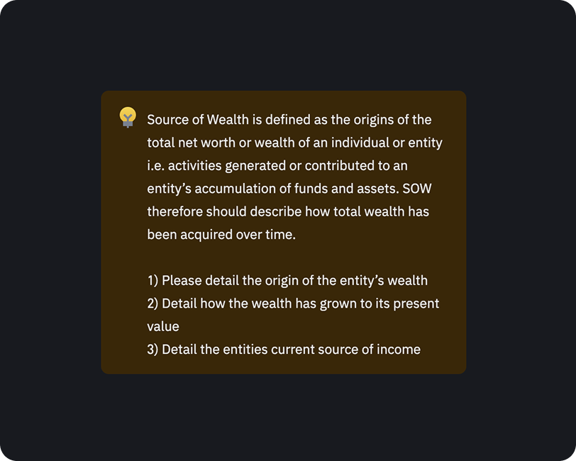
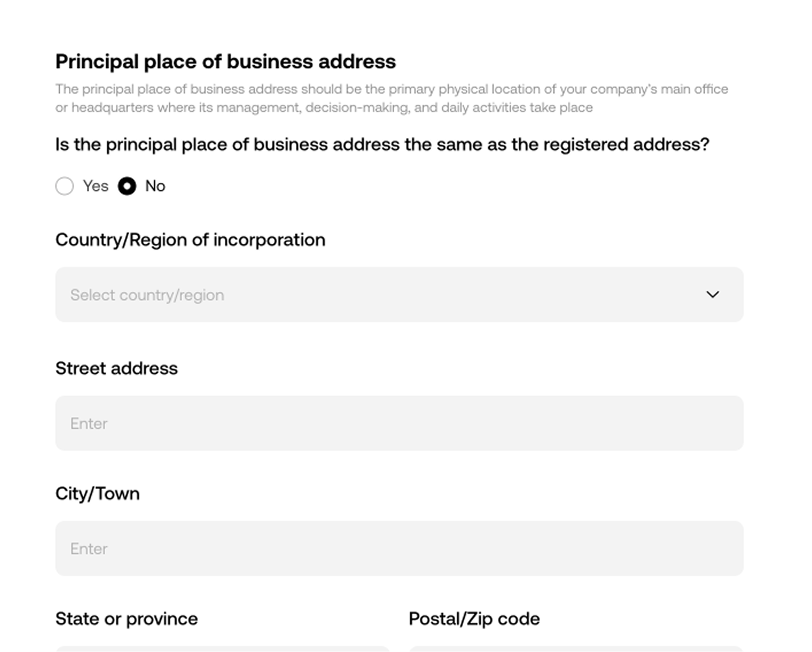
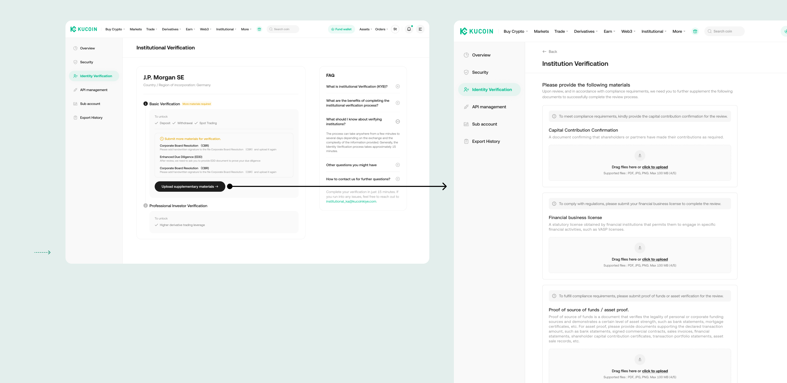
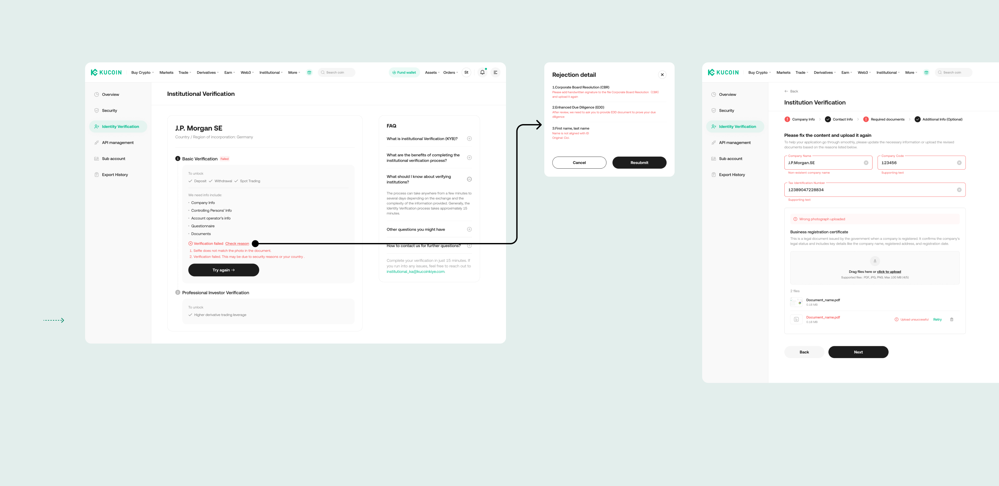
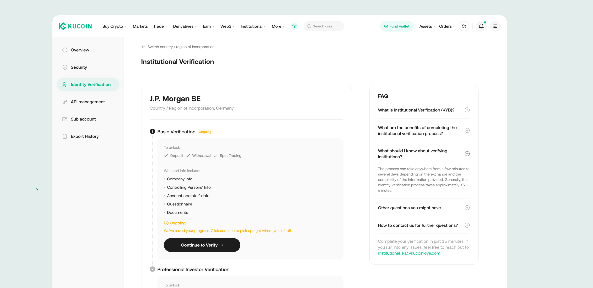
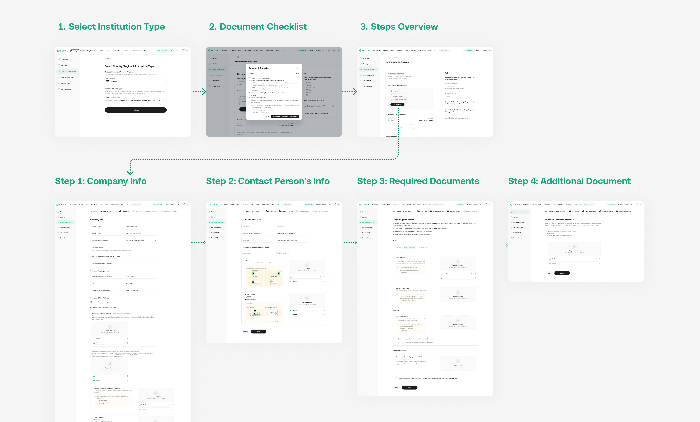
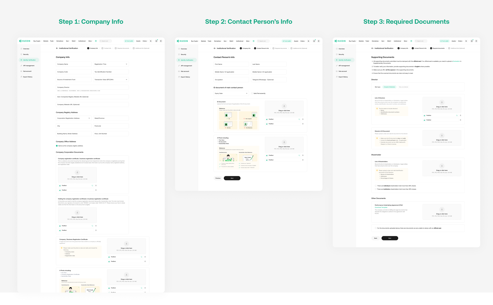
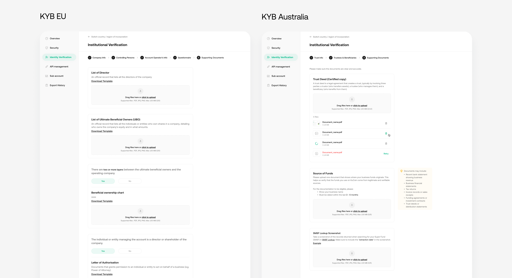

Institutional Verification Redesign (KYB)
// 2 weeks · UX/UI design · Web
// Role: lead designer on the flow — with 1 PM, front-end & back-end

// 2 weeks · UX/UI design · Web
// Role: lead designer on the flow — with 1 PM, front-end & back-end
Reframed an “add a selector” request into a root-cause redesign of document submission — for the institutional segment that drives 30–70% of exchange trading volume.
The request was cosmetic. The real problem was comprehension.
KYB is how institutional clients verify their company to trade. Institutional clients drive 30–70% of exchange volume — every drop-off here is lost revenue in the highest-value segment.
A user research report flagged a low KYB conversion rate. A feature request landed on my desk to “fix” it.
Nov KYB self-submission funnel · % = conversion from the step above. Starts at company-info submission, excluding pre-intent homepage traffic the report flagged as non-institutional noise.
82% resubmitted — a clarity problem, not a motivation problem.
Users weren’t abandoning out of disinterest — they were failing, resubmitting, and stalling. These three numbers set the baseline.
From the research report and internal interviews — not a motivation drop-off, a comprehension loop.
Share of document-submission failures by module (Nov).
The split — with vs without a board of directors, two different legal documents apply.
The failure — buried in a wall of text; users never noticed and uploaded the wrong one.
The rule — shareholders owning >25% trigger additional documents; further conditions add even more.
The failure — users couldn’t track cascading requirements from static text.
Takeaway — fix these two modules and the redesign has a clear, measurable focus.

Previous design — key distinctions buried in dense text at exactly these two modules.
Competitor research was an input — alternatives were my decision.
Three patterns recurred across Binance, OKX, Coinbase and Kraken — inputs to my solution, not the answer.

Benchmarking institutional verification flows across leading exchanges.

Today’s bottleneck — doesn’t fix comprehension failures.
At scale — as EU and AU regulation expands, document requirements diverge by region; the selector routes the right set per market.

Users already skip long text, so I used it only for basic concept explanation — never as the fix for complex requirements.

Routes users to the right document with the lowest cognitive load — no hard reading required. This carried the redesign.
Turn reading into a guided, unskippable decision.


The states a happy-path demo hides.
High-risk applicants get prompted for additional documents after submission, each with a clear reason — so the request doesn’t feel like a dead end.

Rejections show specific, fixable reasons so users can debug and resubmit correctly — instead of guessing and abandoning.

Institutional clients need time to gather documents, so progress is saved and the flow is resumable from where they left off.

Select entity type → document checklist → guided submission.

Full journey — entry, preparation, and the four submission steps.

Key screens — the guided form steps where comprehension decisions happen.
Interactive prototype — click through the guided flow. Open in Figma ↗
What I owned — and why it’s better than before.
Static requirements users skipped → wrong submissions → rejection → drop-off, with no clear way to recover.
A structured choice that routes users to the right documents with no added reading — plus a rejection loop they can actually debug.
The same guided-verification pattern became the base for the EU and AU institutional flows — re-applied to materially harder compliance logic: multi-layer entity structures, beneficial-ownership thresholds, and jurisdiction-specific source-of-funds rules (trust deeds, SMSF lookups).

KYB EU and AU — the same pattern extended to each market’s entity types and document rules. Full screens available on request.
What launch taught me — and would change next.
After launch, first-time pass rate rose only marginally (41% → 42%) — well short of the projected lift. The more useful question was why it wasn’t larger, so I sat down with customer support and the compliance team.